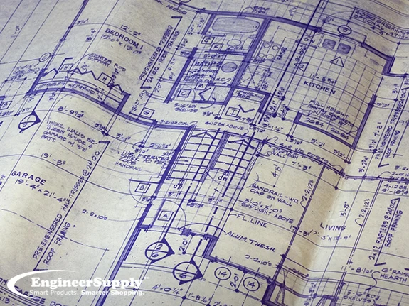
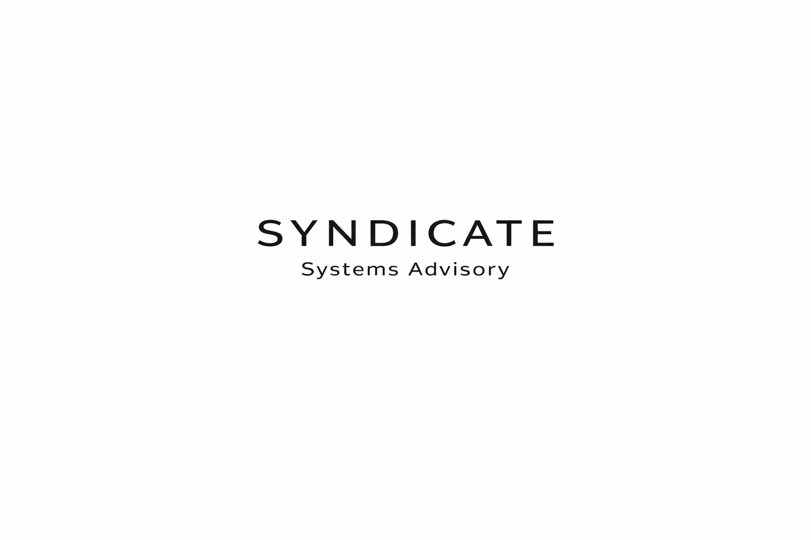

Project Coordination
Requirements, schedules, stakeholders, and documentation aligned before and during execution.
Syndicate Systems supports government projects through disciplined coordination, execution oversight, and infrastructure readiness from start to finish.
Operational lifecycle
Each engagement follows a disciplined arc: organize requirements, mobilize resources, execute with accountability, support operational environments, and maintain partnership readiness.
Phase 01
Complex projects begin with disciplined coordination.
Before work starts, Syndicate organizes documents, vendors, timelines, requirements, and communication channels. Clear structure reduces friction when schedules tighten and stakeholders multiply.

Phase 02
Syndicate aligns people, vendors, schedules, and requirements before work begins.
Phase 03
From site activity to closeout, execution depends on communication, accountability, and controlled handoffs.
Phase 04
Oriented toward complex operational environments—facilities, infrastructure systems, technical sites, and logistics-heavy projects—as requirements and coordination demands scale.

Phase 05
Government contracting readiness is built on documentation, registration, and consistent operational discipline.
Syndicate maintains a professional posture for prime and subcontractor partnerships: clear capability communication, responsive coordination, and structured support for contract vehicles and teaming opportunities.

Capabilities
Core service areas reflect how Syndicate engages: coordination first, execution with accountability, and readiness for government and commercial environments.
Requirements, schedules, stakeholders, and documentation aligned before and during execution.
Coordination support for facilities, technical sites, and infrastructure-oriented project activity.
Vendor alignment, communication, accountability, and handoffs across subcontractor teams.
Flow-down awareness, documentation discipline, and operational support for federal contracting environments.
Logistics-heavy coordination: access, materials checkpoints, and schedule-sensitive mobilization.
Technical project management orientation for structured, multi-stakeholder operational environments.
Government readiness
Placeholder fields below will be updated with verified registration and capability statement details.
[Capability statement summary — placeholder. Insert verified capability narrative and PDF link when available.]
Download capability statementContact
Let’s discuss contract support, subcontractor coordination, or project execution requirements.
Kory Metzger
Syndicate Systems, LLC
Email: [email — placeholder]
Phone: [phone — placeholder]
Contact Syndicate